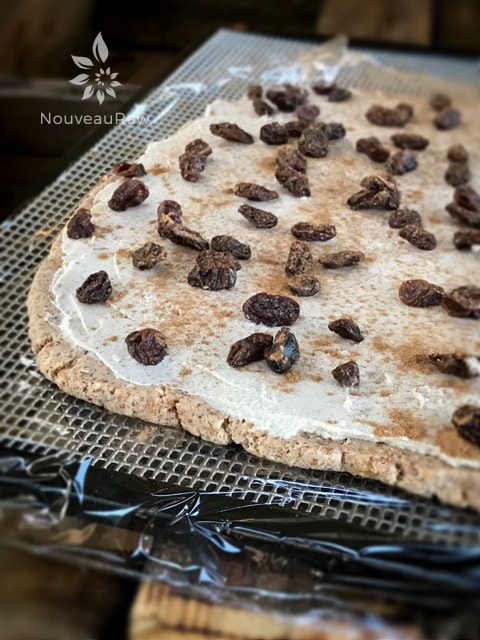
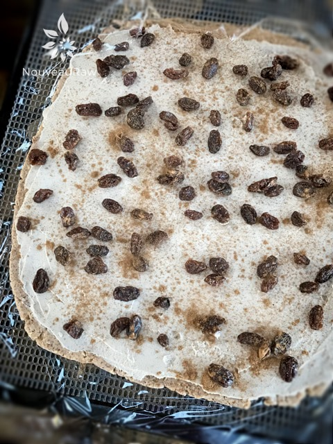
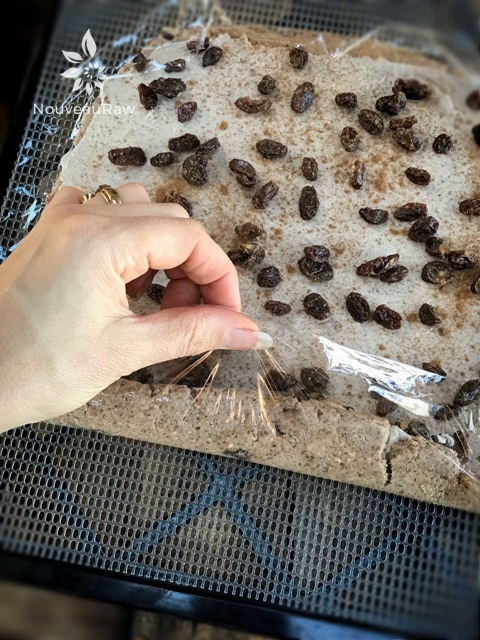
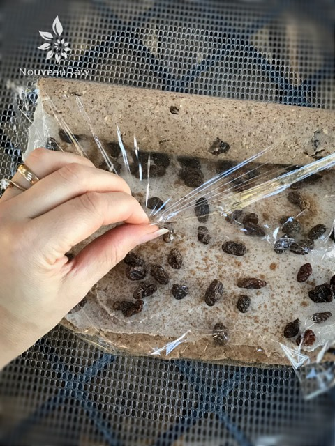
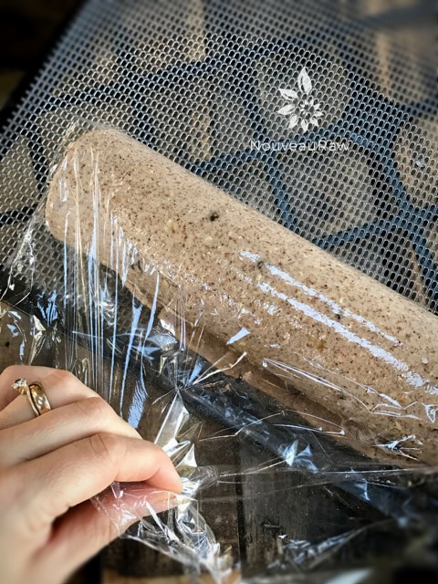
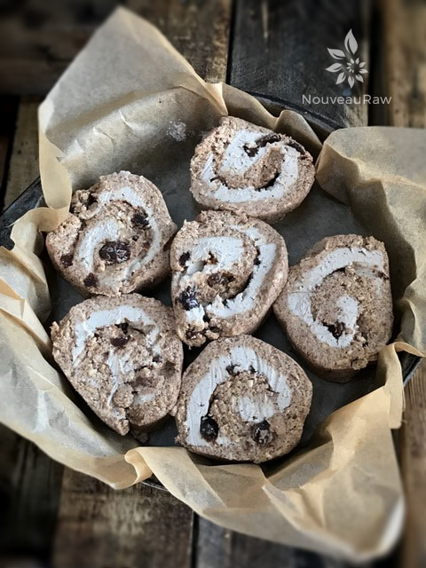
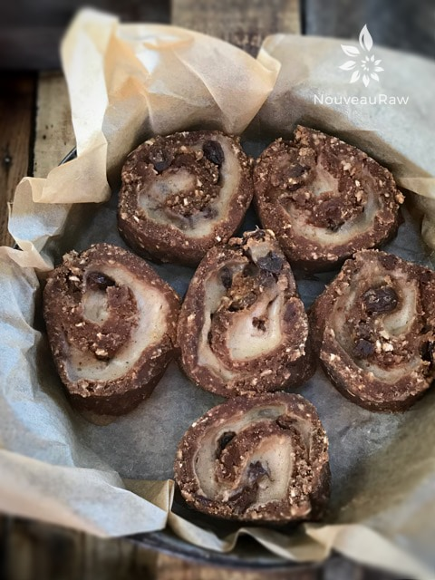
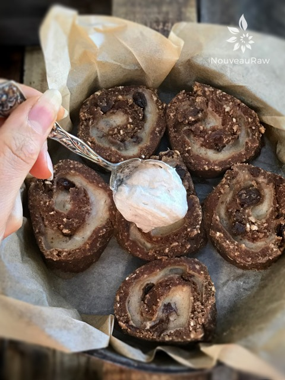

Sunday Morning Sweet Cinnamon Rolls

~ raw, vegan, gluten-free ~
Sweet cinnamon, plump raisins, fresh ground peanut butter, activated almond pulp, and wholesome oats come together in this breakfast delight. Soft, chewy, gooey, slightly sweet, and topped with a creamy frosting… ahh, a true breakfast favorite. Nothing beats homemade cinnamon rolls.
Not too long ago I shared a recipe for making Pumpkin Spiced Ginger Cinnamon Rolls. The dough was based on plantains and bananas. The recipe is amazing… but I wanted to play around with some other ingredients, so you can all have options.
These cinnamon rolls turned out delicious too! Heck, I am on a “roll” here. :) Pun intended. Instead of plantains, I used almond pulp and oats. And of course some other different ingredients, but I know we tend to scan recipes to see what the foundation is built upon.
One interesting thing that transpired through the drying process is just how dark they got… as though they had been baked. This is a great bonus especially if you are needing a little extra support getting a loved one to eat more healthy.
About halfway through creating these cinnamon rolls, I thought I made a major mistake. After I had spread out the dough, I quickly slathered on the frosting, sprinkled a heavy dose of cinnamon and raisins on top, and rolled it into a beautiful tube-shape.
I sat back admiring just how beautifully it had rolled up and couldn’t wait to start cutting them into cinnamon roll slices. After cutting the last one and placing it on the dehydrator tray… it hit me! Slap-me-silly-with-a-rubber-spatula!
There was no way that I could dehydrate these rolls with the frosting nestled inside; it would melt and leak out. I sat back and just stared at them. How could I have done that? Clearly, I wasn’t thinking and was just far too swallowed up in the process. Toss them? Heck no! Unroll them and try to scrape the frosting off so I could dry the dough some? Too messy.
Chalking this up to a lesson learned, I decided to move forward and turn it into an experiment. Knowing that the frosting would most likely puddle around the base of the roll, I lined a baking pan with parchment paper and snuggled the rolls up against one another. I slid the pan into the dehydrator and much to my amazement; they turned out perfectly after they spent some time drying. Shew! The life experiences of a recipe developer. :) I hope you enjoy this treat. Blessings, amie sue
Dry Ingredients:
Wet Ingredients:
- 3 cups moist, packed almond pulp
- 1 cup (2 large) mashed bananas, ripe
- 1/2 cup natural peanut butter
- 6 Tbsp raw almond milk
- 3 Tbsp maple syrup
- 3 Tbsp raw honey or coconut nectar
- 2 tsp vanilla extract
- 3/4 cup raisins
Frosting:
Preparation:
Preparing the dough batter:
- In the food processor fitted with the “S” blade, process the oats to flour. Add flax meal, coconut flour, cinnamon, and salt. Pulse till mixed. Pour into a large bowl.
- Add the almond pulp, mashed banana, peanut butter, milk, sweeteners, vanilla, and raisins. Mix with your hands till everything is well incorporated. Set aside.
- Depending on how dry your almond pulp is, you may need to add water, so the dough sticks together nicely. If you do this, add 1 Tbsp at a time.
- I used fresh ground roasted peanut butter that is very thick and doesn’t have any other ingredients added.
- If you can’t eat peanut butter, try almond butter instead.
Creating the rolls:
- Spread the batter on a non-stick sheet that comes with the dehydrator.
- I have an Excalibur, so my trays are square, which is ideal for this recipe.
- If you don’t have non-stick sheets, use parchment paper, but not wax.
- Spread 1/2″ thick, square up the edges. Mine measured 10.5 x 11″
- Do not spread the dough all the way up to the edges; you want some hang-over so you have something to hold on top while rolling it into a long tube.
- Spread the icing evenly on top of the “bread.” Roughly 1/4″ high. Don’t take the frosting all the way up to the edge, that way it won’t spill out during the rolling process.
- Sprinkle raisins and cinnamon over the top of the frosting. Add as much or little as you like.
Rolling Process:
- I found that if I rolled the cinnamon rolls towards me, instead of way, it was much easier. See what feels right for you.
- Grab the tail end of the plastic wrap and use it to lift and guide the cinnamon roll into an even roll by tucking the dough under.
- Don’t roll it too loose or you will have large air pockets and don’t roll it too tight to where the frosting oozes out. Roll it just right.
- Keep the roll wrapped in plastic and transfer it to a tray and chill the roll in the refrigerator for a few hours. This will just help set the icing just a little bit, and it will make it easier to slice.
- Once chilled, remove the plastic and slice into 1″ slices.
- Because it is rich in flavor, I wouldn’t go much thicker. ? ensures no waste or over-filled tummies.
- Place each slice flat in a baking pan that has been lined with parchment paper, snugging them up against one another.
Drying process:
- Dehydrate at 145 degrees (F) for 1 hour, then reduce to 115 degrees (F) for 4-8 hours.
- At the 4 hour mark, check on them to see how moist or dry you want them. Use one to sample off of during the drying process.
- Once they are done, spread more frosting on top of each cinnamon roll… then enjoy! I sprinkled some crushed walnuts on top, but this is optional.
- Store leftovers in the fridge for 1 day. The longer they sit, the more the “bread” texture changes. They taste amazing right out of the fridge, but even better once they reach room temp. The flavors are more pronounced.
Culinary Explanations:
- Why do I start the dehydrator at 145 degrees (F)? Click (here) to learn the reason behind this.
- When working with fresh ingredients, it is important to taste test as you build a recipe. Learn why (here).
- Don’t own a dehydrator? Learn how to use your oven (here). I do however truly believe that it is a worthwhile investment. Click (here) to learn what I use.
-

-
Roll the dough out on plastic wrap.
-

-

-
Use the plastic to help guide the dough into a roll.
-

-
Once the roll is started, I found it easiest to turn the tray around and pull the roll towards me.
-

-

-
Line a pan with parchment paper and arrange the cinnamon rolls within.
-

-
Dehydrate for 4-6 hours. Look how much they darken. Love that.
-

-
Add a dollop of icing to the top of each one and spread around.
-
-
Top with crushed nuts if desired. Enjoy!
© AmieSue.com